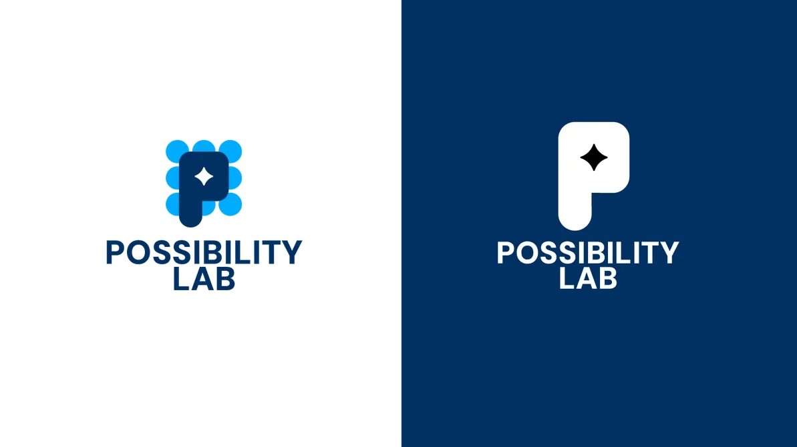
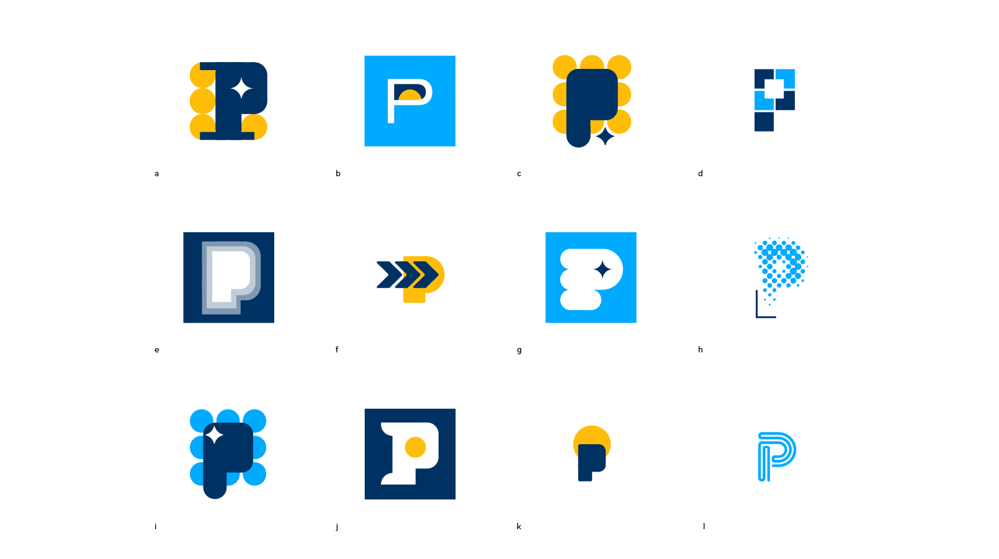
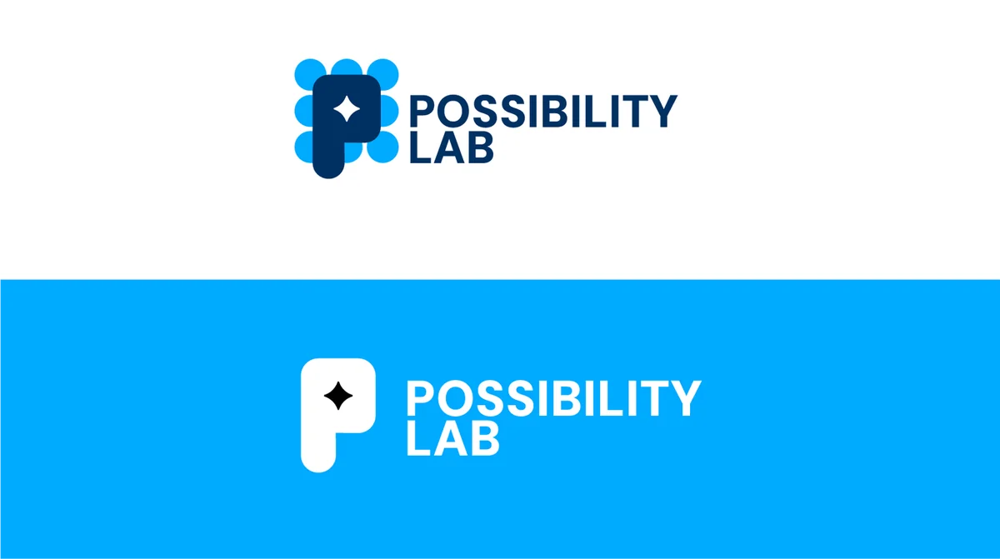

Possibility Lab Logo

PROBLEM: Serious research. Generic academic brand.
SOLUTION: Created an identity that felt as thoughtful and rigorous as the work behind it.
ROLE: Creative Director


How We Did It
Clarified what the brand stood for
Defined core values that actually guided decisions, not just words on a page.
Built a mark with meaning
Designed a system rooted in data, public good, and optimism—without feeling academic or dry.
Aligned design with credibility
Chose type and color that balanced innovation with institutional trust.
Impact
Delivered a clear, credible identity for a UC research group
Created a system that reflects both rigor and optimism
Strengthened how the lab presents its work publicly